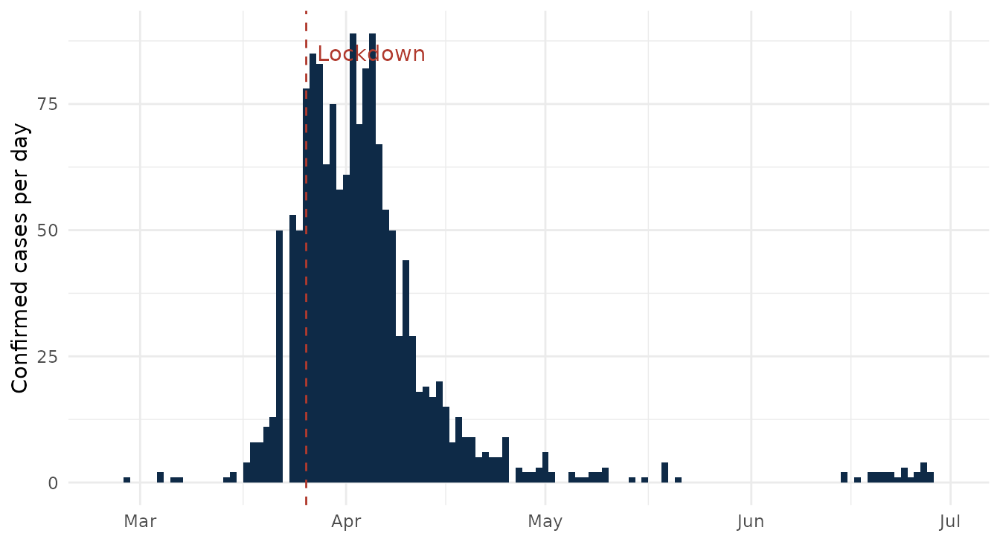
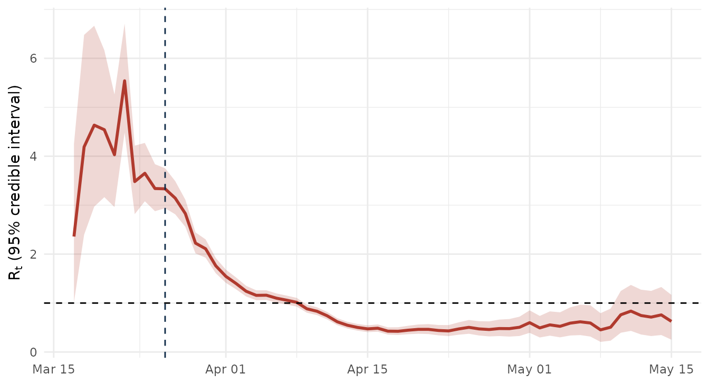
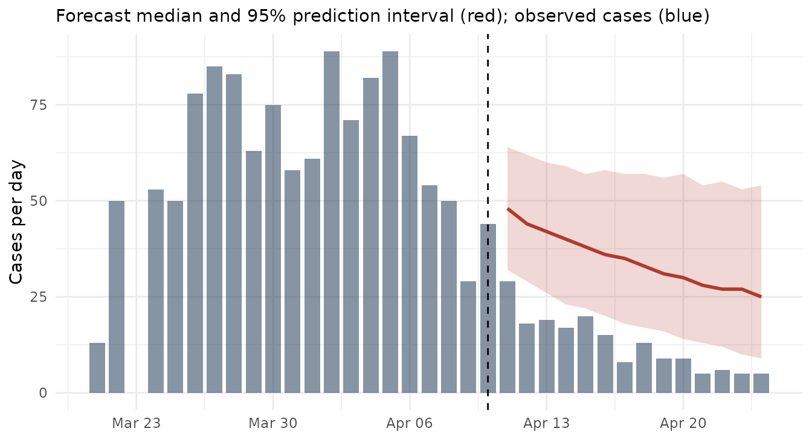

The outbreak. New Zealand confirmed its first
COVID-19 case on 28 February 2020. On 26 March, with about 300 cases,
the country entered a strict national lockdown. By June it had
eliminated community transmission after 1,530 confirmed cases
(nz_covid_2020, Johns Hopkins CSSE). The
questions: how fast was the epidemic growing, did the lockdown
push the reproduction number below one, and how well could cases have
been forecast?
library(tidyepidemio)
library(ggplot2)
red <- "#B03A2E"
navy <- "#0E2A47"
lockdown <- as.Date("2020-03-26")1. The epidemic curve
ggplot(nz_covid_2020, aes(date, cases)) +
geom_col(fill = navy, width = 1) +
geom_vline(xintercept = lockdown, linetype = 2, colour = red) +
annotate("text", x = lockdown, y = 85, label = "Lockdown", hjust = -0.1, colour = red) +
labs(x = NULL, y = "Confirmed cases per day") +
theme_minimal()
Reported daily counts are noisy: a few days show zero cases between days of fifty or more, which reflects reporting rather than transmission.
2. Growth before the lockdown
Fit exponential growth to the fortnight before the lockdown (days with no reported cases cannot be logged and are dropped):
pre <- subset(nz_covid_2020, date >= as.Date("2020-03-15") & date <= as.Date("2020-03-28"))
pre$day <- seq_len(nrow(pre))
epi_doubling_time(subset(pre, cases > 0), day, cases)
#> # A tibble: 1 × 3
#> growth_rate n doubling_time
#> <dbl> <int> <dbl>
#> 1 0.300 12 2.31Cases were doubling roughly every two to three days.
3. The reproduction number
The renewal equation needs a generation-interval distribution. Here a gamma distribution with mean about 5 days, discretized over two weeks:
Early cases were mostly travelers infected abroad. Treat any case with no case in the previous 14 days as imported, so it seeds transmission without being counted as local transmission:
nz <- nz_covid_2020
recent <- stats::filter(c(rep(0, 14), nz$cases), rep(1, 14), sides = 1)
nz$imported <- ifelse(recent[14 + seq_len(nrow(nz)) - 1] == 0, nz$cases, 0L)
nz$local <- nz$cases - nz$imported
rt <- epi_rt_gamma(nz, local, weights = w, window = 7, imported = imported)
subset(rt, date %in% as.Date(c("2020-03-25", "2020-04-08", "2020-04-22")),
c(date, rt_mean, rt_low, rt_high))
#> # A tibble: 3 × 4
#> date rt_mean rt_low rt_high
#> <date> <dbl> <dbl> <dbl>
#> 1 2020-03-25 3.34 2.88 3.84
#> 2 2020-04-08 1.01 0.928 1.11
#> 3 2020-04-22 0.439 0.340 0.552
ggplot(subset(rt, !is.na(rt_mean) & date <= as.Date("2020-05-15")), aes(date, rt_mean)) +
geom_ribbon(aes(ymin = rt_low, ymax = rt_high), fill = red, alpha = 0.2) +
geom_line(colour = red, linewidth = 1) +
geom_hline(yintercept = 1, linetype = 2) +
geom_vline(xintercept = lockdown, linetype = 2, colour = navy) +
labs(x = NULL, y = expression(R[t] ~ "(95% credible interval)")) +
theme_minimal()
Rt was well above 1 before the lockdown and fell below 1 within about two weeks of it.
4. Forecasting the next fortnight
Suppose it is 10 April and Rt was last estimated at about 0.8. Forecast the next 14 days with a renewal model, taking R as uncertain with a gamma distribution centered on 0.8 and held constant:
upto <- subset(nz_covid_2020, date <= as.Date("2020-04-10"))
set.seed(1)
fc <- epi_renewal_forecast(upto, cases, weights = w, horizon = 14,
rt_shape = 80, rt_rate = 100, nsim = 2000)
fc$date <- as.Date("2020-04-10") + fc$step
actual <- subset(nz_covid_2020, date > as.Date("2020-04-10") & date <= as.Date("2020-04-24"))
ggplot(fc, aes(date)) +
geom_ribbon(aes(ymin = lower, ymax = upper), fill = red, alpha = 0.2) +
geom_line(aes(y = median), colour = red, linewidth = 1) +
geom_col(data = subset(nz_covid_2020, date > as.Date("2020-03-20") & date <= as.Date("2020-04-24")),
aes(y = cases), fill = navy, alpha = 0.5, width = 0.8) +
geom_vline(xintercept = as.Date("2020-04-10"), linetype = 2) +
labs(
x = NULL, y = "Cases per day",
subtitle = "Forecast median and 95% prediction interval (red); observed cases (blue)"
) +
theme_minimal()
mean(actual$cases >= fc$lower & actual$cases <= fc$upper)
#> [1] 0The forecast misses badly: none of the observed days fall inside the
95% interval. Transmission kept falling after 10 April, and
Rt was nearer 0.5 within a week, but the renewal forecast
holds R fixed over the horizon. This is the most common failure of
short-term epidemic forecasts during interventions, and the reason to
evaluate any forecasting setup on past data with
epi_renewal_backtest() before using it.
What to report
- The generation interval drives Rt; report it and check the sensitivity of your conclusions to it.
- Confirmed cases are a delayed, incomplete record of infections. For
real-time use, correct recent counts with
epi_nowcast()and evaluate forecasts withepi_renewal_backtest()before relying on them.